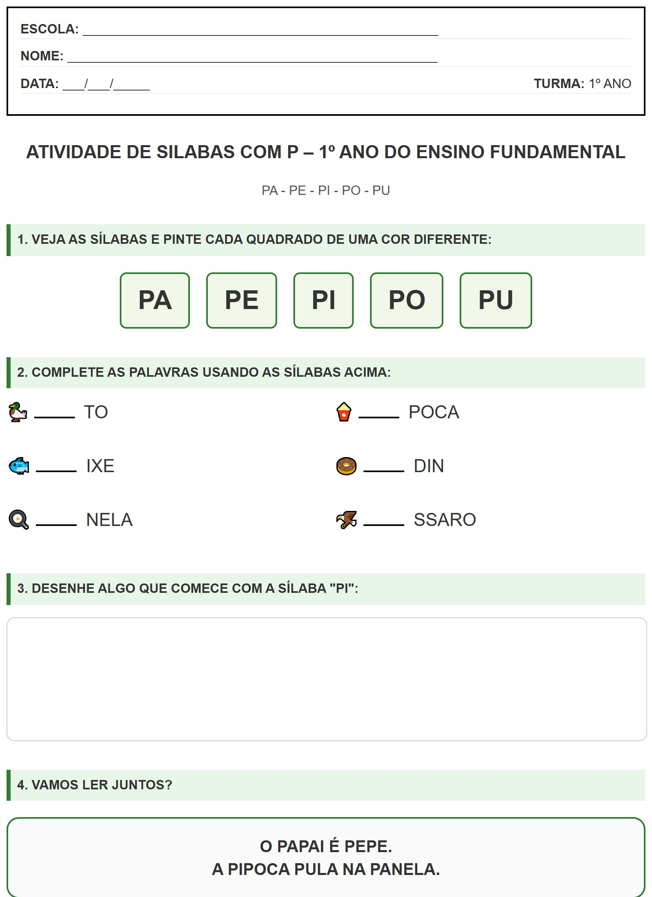

← Voltar ao Portal
ESCOLA:
_________________________________________________
NOME:
___________________________________________________
DATA:
___/___/_____
TURMA:
1º ANO
Atividade de Silabas Com P – 1º Ano do Ensino Fundamental
PA - PE - PI - PO - PU
1. VEJA AS SÍLABAS E PINTE CADA QUADRADO DE UMA COR DIFERENTE:
PA
PE
PI
PO
PU
2. COMPLETE AS PALAVRAS USANDO AS SÍLABAS ACIMA:
🦆
TO
🍿
POCA
🐟
IXE
🍩
DIN
🍳
NELA
🦅
SSARO
3. DESENHE ALGO QUE COMECE COM A SÍLABA "PI":
4. VAMOS LER JUNTOS?
O PAPAI É PEPE.
A PIPOCA PULA NA PANELA.
Visualização da Folha de Atividade
